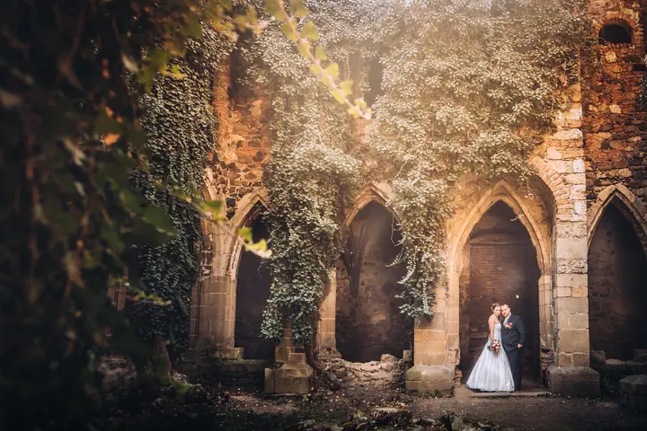
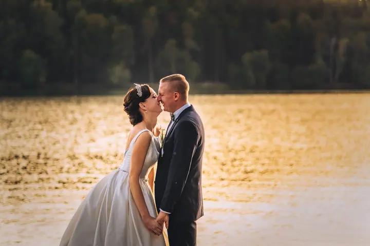
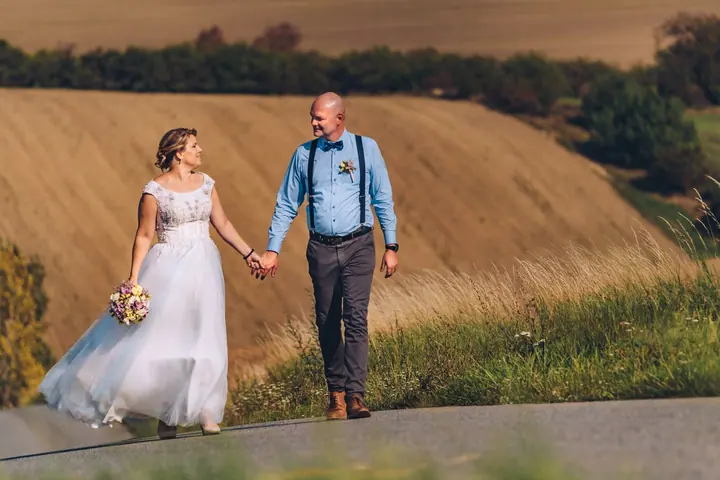

jedna
Svatební focení
Fotím svatby na Blansku, v Jedovnicích, Brně, Vyškově, Boskovicích a Letovicích. Fotím celý den od prvních příprav až po večerní prskavky.


Jmenuji se Tomáš Srnský a jsem svatební fotograf z Blanska. Fotím svatby i párová focení na Blansku, v Jedovnicích, Brně, Vyškově, Boskovicích a Letovicích.
Více o mně
Co fotím
jedna
Fotím svatby na Blansku, v Jedovnicích, Brně, Vyškově, Boskovicích a Letovicích. Fotím celý den od prvních příprav až po večerní prskavky.
Párové focení v Blansku a okolí pro vás dva, mimo svatební shon. Projdeme se krajinou a fotíme v klidu.

Fotky, které budou mít místo ve vašem srdci

Za objektivem
Jmenuji se Tomáš Srnský a jsem svatební fotograf z Blanska. Fotím hlavně svatby, ale také páry, které si chtějí odnést fotky jen pro sebe dva.
Rád vás vezmu ven do krajiny, k vodě, na louku nebo do starých zdí, kde se dá zastavit a nadechnout. Večer pak nechám místo hostům, tanci a prskavkám. Některé chvíle nejlépe vyzní v barvách, jiné černobíle.
Fotím na Blansku, v Jedovnicích, Brně, Vyškově, Boskovicích i Letovicích. Napište mi, jak si svůj den představujete, a dohodneme se.
Tomáš
Pošlete mi zprávu přes formulář, e-mail nebo zavolejte. Stačí datum, místo a pár slov o vás.
Probereme, jak má váš den vypadat, co je pro vás důležité a kde se budeme fotit.
Jsem s vámi a fotím v klidu, aby se z focení nestala další povinnost dne. Na společné fotky si najdeme hezké místo v okolí.
Fotky pečlivě vyberu a upravím a pošlu vám je, ať si je můžete projít v klidu doma.
Portfolio
Otázky
Nejčastěji na Blansku, v Jedovnicích, Brně, Vyškově, Boskovicích a Letovicích. Pokud máte svatbu jinde, napište mi a domluvíme se.
Ano, nabízím i párové focení v Blansku a okolí.
Cena záleží na rozsahu a délce focení. Napište mi, jak si den představujete, a pošlu vám nabídku.
Přes formulář na webu, e-mailem na tomas@srnsky.cz nebo na telefonu +420 724 124 052.

Napište pár vět o tom, co si představujete. · +420 724 124 052